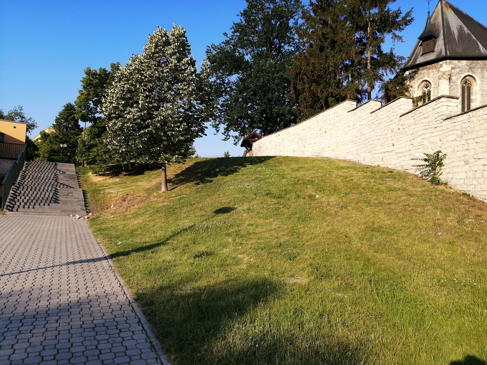

Kopeček
Kopeček je nejslavnější lokace v Louny townu. Na tomto místě se schází a bojují lidé ze základky. Adresa kopečku je U základky pod hřbitovem. Na kopečku kdysi bojovali i otci zakladatelé, díky tomu se stal pietním místem. Aktuálně je tou nejvyhledávanější atrakcí pro turisty kteří Louny town navštíví.
